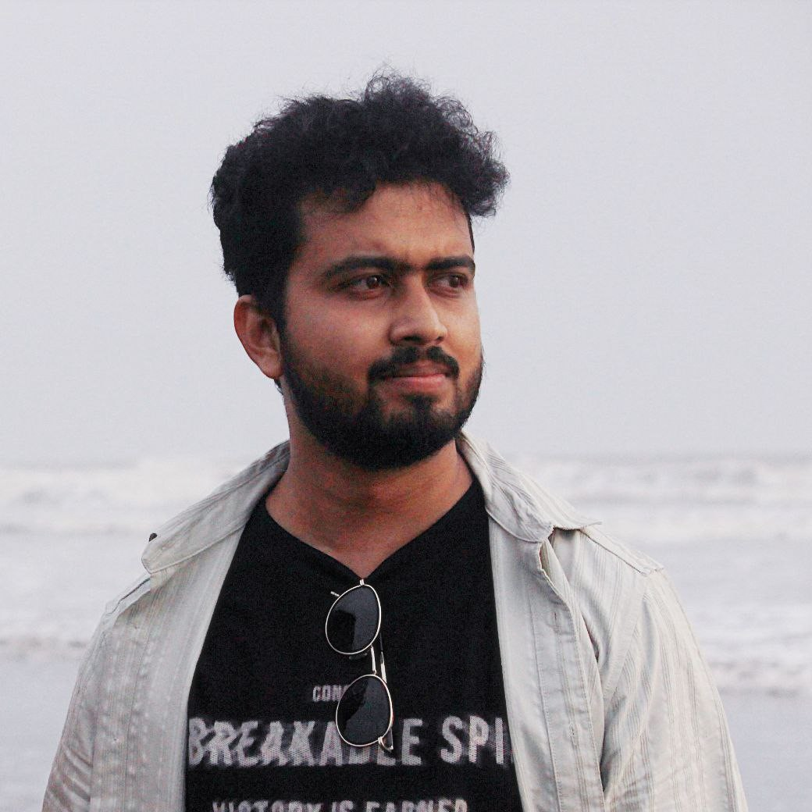

Prachurjya Hazarika
Particle Physics | CMS Collaboration at CERN
I am a PhD student at IISER Pune, working in Experimental High Energy Physics under Prof. Sourabh Dube. As a member of the CMS collaboration at CERN, I study proton-proton collisions to search for physics beyond the standard model. I also like data visualization, graphic design, painting, and video editing. Find my CV here .
Research & Work
Search for Physics Beyond the Standard Model in CMS Experiment
[2020–present]The standard model of particle physics is currently the best model for understanding the building blocks of nature. However, we still have to figure out a lot of unexplained phenomena. In my PhD, I am developing the analysis tools to search for the 'vector-like leptons' in proton-proton collisions in the CMS detector, in a final state containing exactly two standard model leptons. This is part of a broad search for VLLs in the multi-lepton final state, where I am focusing on the scenario where the new leptons couple to electrons and muons. I am exploring the full Run-2 and parts of the Run-3 datasets, corresponding to a total integrated luminosity of 200 fb\(^{-1}\). In combination with the complementary multi-lepton final states, the search is sensitive to vector-like lepton doublet models with masses up to 1.1 TeV and singlet models beyond 300 GeV. The analysis is currently undergoing internal review within the CMS Collaboration.
Development of DNN-based photon ID
[2021-2022]I have been working with the EGamma group of CMS which is responsible for the reconstruction and identification of electrons and photons in the Electromagnetic Calorimeter (ECAL) of CMS. In 2021, I helped them out with a Deep Neural Network based photon identification algorithm. This ID ends up giving better efficiency for photons than the earlier cut-based ID, and is integrated to the central CMS software framework in the Run-3 data taking period (2022 onwards).
MC contact for EGM POG
[2023–present]I am serving as the contact person between the EGamma POG (Physics Object Group) and PdmV (Physics Data and Monte-Carlo Validation) group at CMS, where I handle specific MC requests by the EGamma group for electron and photon related studies.
Phenomenological study of neutrino oscillations
[2019]As a part of my MSc thesis, I did a phenomenological study on the Non-Standard Interactions (NSI) in neutrinos and the consequences of NSI on neutrino oscillations and neutrino detection experiments, by using Super-Kamiokande as an example. This work mapped the potential discovery regions in energy-azimuth angle phase space for these NSI signatures in the Super-K detector.
Tools & Side Projects
I wanted one place where I could use cloud and local language models without jumping between several apps, so I built my own. It brings terminal and browser chat, LiteLLM providers, local models, shared conversation history, file attachments, prompt skills, and a VS Code connection into one setup. Building it gave me plenty of hands-on work with Python, LLM APIs, local inference, routing and retries, web interfaces, and automating a slightly complicated Linux setup.
Statistical tools are easier to learn when there is a clear path from a tiny example to a realistic one, so I made a set of CMS Combine tutorials that does exactly that. It starts with single-bin counting and builds up to multi-region shape analyses with systematic uncertainties. Along the way, it demonstrates statistical inference, ROOT and RooFit/RooStats, datacard design, shell scripting, CMake, and technical documentation that can be followed without a full CMSSW installation.
NanoAOD schemas can change between productions, and I wanted the analysis code to survive those changes without constant rewrites. This C++ and ROOT template detects branch types at runtime, handles renamed or missing variables, and can evaluate neural networks event by event with ONNX Runtime. It also includes CRAB submission tools and reproducible Snakemake and REANA workflows, bringing together robust software design, machine-learning inference, distributed computing, and pipeline automation.
I built this pipeline to take public CMS collision data from its original AOD or MiniAOD format, turn it into smaller custom ntuples, and finally produce analysis histograms. It covers the full route from raw scientific data to usable results and uses C++, Python configuration, CMSSW, ROOT, virtualized computing environments, and careful data-format handling.
I made a compact analysis template for turning Delphes event trees into histograms and comparison plots. The code separates histogram definitions, helper functions, event processing, input handling, and plot overlays, so a new study can be added without rebuilding everything from scratch. It is a straightforward example of modular C++, ROOT-based data analysis, simulation workflows, and reusable scientific software.
This CMSSW EDAnalyzer turns the complex MiniAOD event format into flat, analysis-ready ntuples. I split the C++ event processing into focused modules, used Python configuration to control inputs and outputs, and prepared the project for local and CRAB-based execution. It reflects the less visible but essential work of data engineering: choosing useful variables, keeping code maintainable, and making large datasets practical to analyze.
Fun stuff
Data visualization
I like to make data visualization in my free time. Check out the following figures that show the demographic and manpower distribution of the CMS collaboration. The data is taken from iCMS. Find more of these here .


Physics Conclave 2025
I was in charge of social media and outreach of the Physics Conclave event, held at IISER-Pune in March, 2025. I also designed the website. Check it out here .
Outreach
YouTube videos
I like to make/edit videos occasionally. We made a YouTube video on the International Day of Women in Science (2024). This video features my colleagues - PhD student Riya Sharma, postgraduate student Chitrakshee Yede, and undergraduate students Shailee Khandekar, Uttsavi Rastogi, and Vaidehi Tikhe. The video was conceptualized by my supervisor, Prof. Sourabh Dube. I also made a campus-tour video at IISER Pune in February, 2024. Hopefully I have covered most of the important information.
EHEP Women at IISER Pune
A fun conversation with women pursuing experimental particle physics at IISER Pune, featuring PhD and undergraduate students.
Watch on YouTubeIISER Pune Campus Tour
A campus tour of IISER Pune from my perspective in pre-monsoon 2024.
Watch on YouTubeTalks
Department of Physics, Jorhat Institute of Science and Technology.
Assamese talk introducing the Standard Model and experimental particle physics, intended for high school students.
Online talk during COVID lockdown period. Department of Physics, Jorhat Institute of Science and Technology.